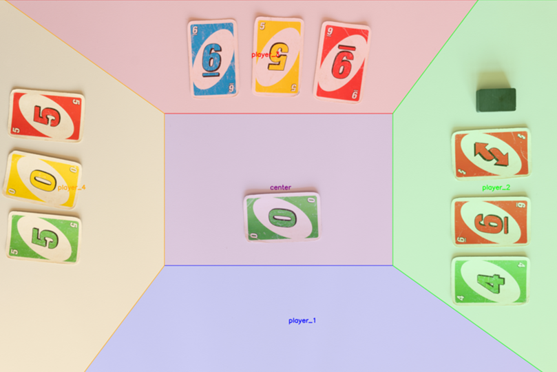
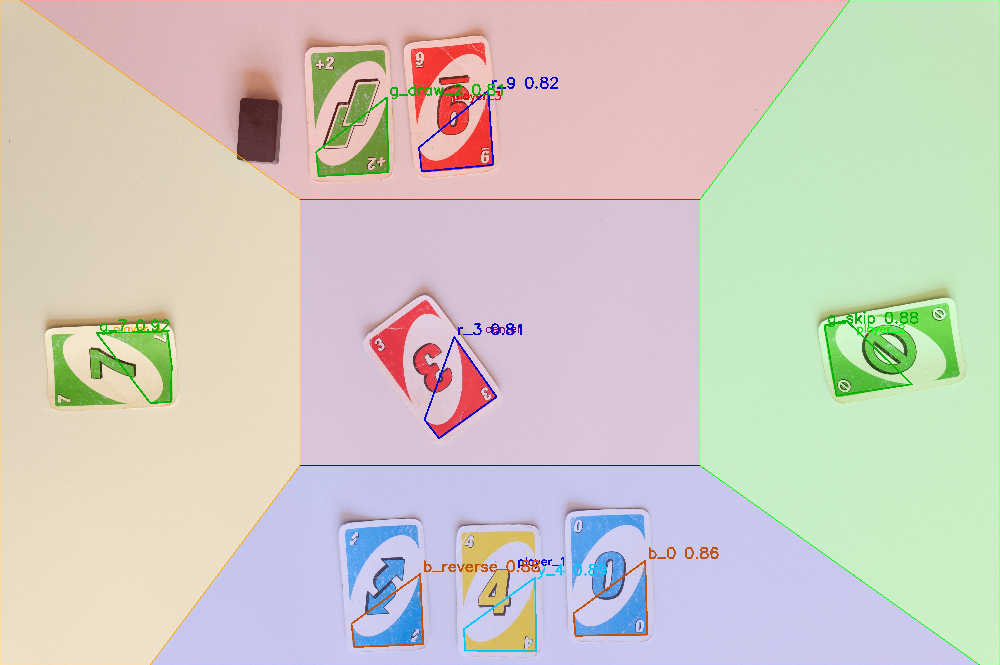

Co-designed and co-implemented a fully classical computer vision pipeline to detect and classify UNO cards in real-time game images: identifying each card's color and value and mapping it to the correct player region, with no neural networks involved.
UNO Card Recognition
Objective
Key Contributions
- Region Layout: Defined the five player/center polygons and tuned their vertex coordinates iteratively to maximise region accuracy across the test set.
- Active Player Detection: Implemented both token detectors: the dark rectangular blob on white backgrounds and the yellow circular blob on dark backgrounds, including the background-type classifier that selects between them.
- Contour Filtering & Cropping: Detected blobs from the HSV masks, approximated each to a convex polygon, filtered out candidates that were too small or too large, merged overlapping detections, and extracted the bounding box crop of each remaining candidate for classification.
- Post-Processing & Region Assignment: Handled all ambiguity resolution after template matching: deduplicating multiple detections of the same card, resolving the draw-2 / 2 confusion, applying lower confidence thresholds for black (wild/draw-4) cards, and assigning each detected card to its correct player region via pointPolygonTest depth.
Visuals
 Fig 1. Full detection pipeline: from raw frame to Kaggle submission CSV
Fig 1. Full detection pipeline: from raw frame to Kaggle submission CSV
 Fig 3. Black token detection (Result)
Fig 3. Black token detection (Result)
 Fig 5. Black token detection (Masking)
Fig 5. Black token detection (Masking)
 Fig 6. HSV color masks after morphological closing (yellow, red, green, blue, black)
Fig 6. HSV color masks after morphological closing (yellow, red, green, blue, black)
Fig 1. Full detection pipeline: from raw frame to Kaggle submission CSV

Fig 2. Four player/center regions overlaid on a game image
Fig 3. Black token detection (Result)

Fig 4. Detected cards annotated by color and assigned to player regions
Fig 5. Black token detection (Masking)
Fig 6. HSV color masks after morphological closing (yellow, red, green, blue, black)